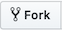

重要
翻訳は あなたが参加できる コミュニティの取り組みです。このページは現在 100.00% 翻訳されています。
1. 貢献のための一歩一歩
注釈
ここでは手順の説明のためにQGISドキュメントを使用しますが、以下で説明するコマンドおよび手順はすべて、QGISウェブサイトにも当てはまります。
あなたがこの文章を読まれているということはきっと、QGISドキュメントに貢献しようという気持ちがあって、そのための方法を探されているのでしょう。 ここで提供しようとしているのは、まさしくそれです。現在この文書では、目的を達成するための複数の方法を一通り案内し、従うべき主な手順を示し、使用可能な小技と知っておくべき落とし穴を教えています。
何か助けが必要なときには迷わず、修正しようとしているIssueレポートのコメントに書き込むか、 QGISコミュニティチームメーリングリスト に投稿をしてください。より詳しくは ドキュメントを書く をご覧ください。
さあ、では集中して始めてみましょう。
ドキュメントのソースはgitバージョン管理システムを使って保存され、GitHubのhttps://github.com/qgis/QGIS-Documentation で公開されています。修正すべき問題や説明すべき機能の一覧は、https://github.com/qgis/QGIS-Documentation/issues にあります。
Tip
初めて貢献される方で、何から始めたらいいかわからないという方は、`問題レポートへようこそ<https://github.com/qgis/QGIS-Documentation/contribute>`_ に取り組むのが面白いかもしれません。
ファイルを修正するには、排他的ではない2つの方法があります:
1.1. GitHub のウェブインタフェースを使用する
GitHubのウェブインタフェースでは次のことを行うことができます。
ファイルを編集する
変更をプレビューし、コミットする
変更がメインリポジトリに挿入されるようにプルリクエストを行う
ブランチを作成、更新または削除する
もしあなたがgitやGitHubの語彙にまだ慣れていないなら、GitHubの Hello-world プロジェクトを読んで、以下で使用する基本的な語彙やアクションを学ぶとよいでしょう。
注釈
報告されたissueを修正するとき
もしあなたが issue を修正するための変更を加えている最中なら、issueレポートにコメントをして、それをあなた自身に割り当ててください。これにより、複数の人が同じissueに取り組むことを防ぐことができます。
1.1.1. QGISドキュメントをフォークする
GitHubアカウント はすでに取得しているものと仮定すると、まず最初にするべきは、ドキュメントのソースファイルをフォークすることです。
QGIS-Documentation のリポジトリ ページに移動して、右上隅の  ボタンをクリックします。
{kind=link}
ご自身のGitHubアカウントに、QGIS-Documentationリポジトリ (https://github.com/<YourName>/QGIS-Documentation) が作られていることと思います。このリポジトリは公式のQGIS-Documentationリポジトリのコピーです。あなたに完全な書込権限が与えられていて、公式のドキュメントに影響を与えることなく変更を加えることができます。
1.1.2. 変更を加える
QGISドキュメントに貢献するにはいくつかの異なった方法があります。以下ではそれらを別々に示しますが、あるプロセスから別のプロセスに切り替えることに何ら問題はありません。
選択肢 1： Edit on GitHub ショートカットを使用する
QGIS ドキュメントのそれぞれのページは、ページの右上にある Edit on GitHub というリンクをクリックすると、素早く簡単に編集することができます。
Edit on GitHubをクリックすると、qgis:masterブランチのファイルが開きます。ページの上部には、あなたにはこのリポジトリへの書込権限がないため、変更はあなたのリポジトリの新しいブランチで適用される旨を知らせるメッセージが、表示されます。変更を行います。ドキュメントはreStructureTextシンタックスを使用して書かれていますので、変更の内容によっては、 執筆のためのガイドライン を参照しながら行う必要があるかもしれません。
終了したら、変更点について短いコメントを書き、 Propose changes をクリックしてください。これであなたのリポジトリに新しい ブランチ (
patch-xxx) が生成されます。Propose changes をクリックすると、GitHubの Comparing changes ページに移動します。
すべての変更が終わったら、下の プルリクエストで変更をシェアする のセクションの、 変更を比較 にスキップしてください。
QGISに送信する前に追加の変更が必要な場合は、次の手順に従ってください。
フォークしたあなたのQGIS-Documentation (
https://github.com/<YourName>/QGIS-Documentation) リポジトリに移動します。をクリックして `` patch-xxx`` ブランチを探し、このブランチを選択します。 ボタンが Branch: patch-xxx に変わります。
下の ファイルを修正する に飛んでください。
{kind=link}
注釈
Edit on GitHub ショートカットは左サイドバーの一番下のドロップダウンメニューからも利用できます。
選択肢 2：あなたのドキュメンテーションレポジトリに一時的な専用ブランチを作成する
あなたがフォークしたQGIS-Documentationで直接ファイルを編集できます。
まず、master ブランチが qgis:master ブランチの最新版であることを確認してください。そのためには:
リポジトリのメインページ、つまり
https://github.com/<YourName>/QGIS-Documentationにアクセスしてください。masterブランチがアクティブで、qgis/QGIS-Documentation:masterが最新かどうかが表示されているはずです。そのブランチが上流ブランチより先にコミットしている場合は、
masterブランチを揃えるまで、以前の shortcut button alternative を使った方がよいでしょう。後ろにコミットがあるだけなら:
右側の Fetch Upstream ドロップダウンメニューを展開します。以下のことができます
ブランチを Compare し、メインリポジトリの新しい変更を確認します
Fetch and merge: 上流のブランチからの変更をあなたのブランチに取り込みます。
Fetch and merge をクリックしてみましょう: 処理が終わると、あなたのブランチは
qgis/QGIS-Documentation:masterの最新版として言及されます。
フォークした QGIS-Documentation リポジトリの左上にある をクリックし、テキストフィールドにユニークな名前を入力して新しい ブランチ を作成します。新しいブランチの名前は、あなたが修正しようとしている問題に関連付ける必要があります。これで、 ボタンに Branch: branch_name と表示されるようになります
その上に新しい変更を始める準備ができました。
注意
変更はこの一時的な専用ブランチで行うこと。絶対に master ブランチでは行わないこと
qgis/QGIS-Documentation の master ブランチからあなたのQGIS-Documentationリポジトリに変更をマージする場合を除いて、 慣例として master ブランチでは変更を行わないでください。問題ごとに別々のブランチを使用することによって、他のブランチに干渉することなく、同時に複数の問題に取り組むことができます。間違えた場合は、いつでもブランチを削除して、masterブランチから新しいブランチを作成してやり直すことができます。
1.1.3. ファイルを変更する
フォークしたQGIS-Documentationのソースファイルをブラウズして、修正する必要があるファイルに移動します。
執筆のためのガイドライン に従いながら修正を行います。
終了したら、ページの一番下にある Commit Changes フレームに移動し、行った変更について短いコメントを書き、そして Commit Changes をクリックしてあなたのブランチに直接変更をコミットします。 Commit directly to the branch_name branch. が選択されていることを確認してください。
問題を修正するために更新する必要がある他のファイルについて上記の手順を繰り返します。
1.1.4. プルリクエスト経由で変更を共有する
あなたの変更を公式ドキュメントに統合するためにはプルリクエストをする必要があります。
注釈
Edit on GitHub リンクを使用して始めた場合は
変更をコミットした後、GitHubはあなたの patch-xxx ブランチで行った変更を qgis/QGIS-Documentation マスターブランチと比較する新しいページを自動的に開きます。
下の Step 2 にスキップしてください。
新しいプルリクエストを始める
QGIS-Documentation リポジトリのメインページに行き、 New pull request をクリックします。
変更を比較する
一方が base:master 、もう一方が ``compare:branch_name` （図を参照）という2つのダイアログボックスが表示されている場合は、あなたの行った変更はあなたのリポジトリの中で、変更を加えたブランチからあなたのマスターブランチへとマージされるだけです。これを修正するために compare across forks と表示されているリンクをクリックします。

図 1.1 Comparing changes ページがこのようなものだったら、 compare across forks リンクをクリックします。
4つのドロップダウンメニューが表示されていることと思います。このドロップダウンメニューによって、あなたのブランチで行った変更を、変更をマージしたい相手である公式のマスターブランチと比較することが可能になります。4つのドロップダウンメニューは以下の通りです。
base fork ：あなたの変更をマージしたい相手先のフォーク
base ：あなたの変更をマージしたいbase forkのブランチ
head fork ：base forkに組み込みたい変更があるフォーク
compare ： 変更が行われたブランチ
base fork で qgis/QGIS-Documentation を、base で master を選択します。head fork をあなたのリポジトリ <YourName>/QGIS-Documentation に、compare をあなたが変更を行ったブランチに設定します。

図 1.2 qgis/QGIS-Documentation とあなたのリポジトリとの間で変更を比較している
Able to merge と書いてある緑色のチェックマークは、あなたの変更が衝突することなく公式のドキュメントにマージできることを示しています。
Create pull request ボタンをクリックします。
警告
 と表示されたら
と表示されたら
これは 競合 があることを意味します。他の誰かがあなたの変更と衝突するコミットを行ったため、あなたが変更しようとしているファイルはあなたがターゲットとしているブランチの最新版ではありません。プルリクエストを作成することはできますが、マージを完了させるためには conflicts を修正する必要があります。
Tip
最新バージョン のQGISドキュメントは、翻訳されてはいますが、保守は継続しており、問題が見つかれば修正が行われています。特定リリースの問題を修正する場合は、上記の手順で base を master から適切な release_... ブランチに変更してください。
プルリクエストを記述する
テキストボックスが開きます。対処している問題に関するコメントを入力します。
これが特定の issue に関連する場合は、コメントにissue番号を追加します。これは＃とissue番号 (例 #1234) を入力することによって行われます。 直前に fix や close のような語が置かれている場合は、プルリクエストがマージされると、すぐにそのissueはクローズされます。
あなたが変更を行ったすべてのドキュメントのページへのリンクを含めてください。
Create pull request をクリックします。
プルリクエストのレビューとコメント
上で見たように、誰でもプルリクエストを通してドキュメントに修正を加えることができます。同様に、誰でも質問や `コメント<https://docs.github.com/en/pull-requests/collaborating-with-pull-requests/reviewing-changes-in-pull-requests/commenting-on-a-pull-request>`_ でプルリクエストをレビューすることができます。書き方がプロジェクトのガイドラインに合っていないかもしれませんし、変更の詳細やスクリーンショットが欠けているかもしれません。レビューすることで、形式と内容の両方で貢献の質を向上させることができます。
プルリクエストをレビューするには
pull requests のページ へ移動して、コメントをしたいプルリクエストをクリックします。
ページの一番下に、このプルリクエストについて全体的なコメントを残すことのできるテキストボックスがあると思います。
特定の行についてコメントをするには、
{kind=link}
特定の行に対するコメントは、次のいずれかの方法で公開することができます。
Add single comment ボタンを使って、単独のコメントとして公開する。この場合コメントはその都度即座に公開されます。コメント数が少ない場合や他のコメントにコメントする場合にのみ、この方法を使ってください。
または Start a review ボタンを押します。コメントは検証後に自動的に送信されないので、後から編集したり取り消したり、レビューの要点の要約やプルリクエストに関するグローバルな指示、承認するかどうかを追加することができます。これはより柔軟で、レビューを構成し、コメントを編集し、準備ができたら公開し、リポジトリフォロワーに単独の通知を送ることができ、コメント毎に通知を送らないので、便利な方法です。詳細 を入手してください。
図 1.3 特定の行に対して修正の提案とともにコメントを行う
行に対するコメントには提案を埋め込むことができ、プルリクエストの作成者はこれをプルリクエストに適用することができます。提案を追加するには、コメントテキストブロックの上にある  Insert a suggestion ボタンをクリックして、提案ブロックの中のテキストを修正します。
Insert a suggestion ボタンをクリックして、提案ブロックの中のテキストを修正します。
Tip
プルリクエストへの提案をバッチとして追加したいときは
プルリクエストの作成者としてレビュワーからのフィードバックを直接プルリクエストに組み込むときに、対処すべき提案の数が多いためにそれらをバッチコミットとして追加したい場合は、コメントの一番下にある Commit suggestion ボタンを使用するのは避けてください。 すなわち、以下のようにします。
 タブに移動します。
タブに移動します。取り込みたい提案のそれぞれで Add suggestion to batch を押します。押すごとにカウンターが増えるのが分かると思います。
取り込みたいすべての提案をプルリクエストに適用する準備ができたら、どれでもいいので Commit suggestions ボタンを押して、この変更を説明するメッセージを入力します。
これによってすべての修正がひとつのコミットとしてブランチに追加されます。結果として、変更履歴が読みやすいものとなり、リポジトリのフォロワーに送信される通知の数も減ります。ついでに言えば、この処置によってあなたのクリック数も大きく減らすことができます。
訂正する
新しいプルリクエストは自動的に プルリクエストリスト に追加されます。他の編集者や管理者があなたのプルリクエストを見直し、提案をしたり修正を求めたりするかもしれません。
プルリクエストは自動ビルドチェック（rstフォーマットやpythonコードの構文など）もトリガーし、ページ下部にレポートが表示されます。エラーが見つかった場合、コミットの横に赤い十字が表示されます。赤い十字をクリックするか、プルリクエストページの一番下にあるサマリーセクションの Details をクリックすると、エラーの詳細を見ることができます。報告されたエラーや警告は、変更を qgis/QGIS-Documentation リポジトリにコミットする前に修正する必要があります。
メインリポジトリにマージされるまでは、プルリクエストに修正を加えることができます。それはプルリクエストを改善するためだったり、提案された修正に対処するためだったり、あるいはビルドエラーを修正するためだったりするでしょう。
変更するにはプルリクエストのページで をクリックして、変更したいファイル名の横にある鉛筆ボタン  をクリックします。
をクリックします。
プルリクエストで使用したのと同じブランチで変更を加えた場合、追加された変更はすべてプルリクエストに自動的に追加されます。このため、追加の変更は、プルリクエストで修正しようとしている問題にその変更が関連する場合にのみ、行うようにしてください。
別の問題を解決したい場合は、それらの変更に対して新しいブランチを作成して上記のステップを繰り返します。
ビルドエラーが修正され、あなたと管理者が変更に満足したら、管理者はあなたの貢献をマージします。
1.1.5. マージしたブランチを削除する
変更がマージされた後でブランチを削除できます。古いブランチを削除すると、未使用のブランチや古いブランチをリポジトリに保存しておく必要がなくなります。
フォークしたあなたのQGIS-Documentationリポジトリ (
https://github.com/<YourName>/QGIS-Documentation) に移動します。Branches タブをクリックします。 Your branches の下にあなたのブランチがあることと思います。
不要なブランチの
 Delete this branch アイコンをクリックして削除します。
Delete this branch アイコンをクリックして削除します。
1.2. Gitコマンドラインツールを使用する
GitHubのウェブインターフェイスは、簡単なやり方でQGIS-documentationレポジトリの更新に貢献することができますが、下記のためのツールは提供していません。
複数のコミットをまとめることによって変更履歴をきれいにする
メインリポジトリとの間で生じうる衝突を解決する
あなたの変更をテストするためにドキュメントをビルドする
より高度で強力なツールへアクセスし、リポジトリのコピーをローカル環境に持つためには、ハードドライブ上に gitをインストール する必要があります。しばしば必要となる基本的な事項は以下で説明されています。そこではウェブインターフェイスを使用する場合であっても気をつけるべきルールを学ぶことができるでしょう。
以下のコードサンプルでは、 $ で始まる行はあなたが入力すべきコマンドを示します。一方、 # で始まる行はコメントです。
1.2.1. ローカルリポジトリ
さあ、QGIS-Documentationリポジトリの**あなた用の**コピーをローカル環境に取得する準備はできましたね。
ウェブURLを使った以下のコマンドで、QGISドキュメンテーションリポジトリを複製し取得することができます。
# move to the folder in which you intend to store the local repository
$ cd ~/Documents/Development/QGIS/
$ git clone https://github.com/<YourName>/QGIS-Documentation.git
前者のコマンドラインは単なる例です。パスもリポジトリのURLも適応させ、<YourName> を自分のgithubユーザー名に置き換える必要があります。
次に以下の確認を行ってください。
# Enter the local repository
$ cd ./QGIS-Documentation
$ git remote -v
origin https://github.com/<YourName>/QGIS-Documentation.git (fetch)
origin https://github.com/<YourName>/QGIS-Documentation.git (push)
$ git branch
* master
origin は、あなたのQGIS-Documentationリポジトリの、リモートリポジトリにつけられた名前です。
master はデフォルトのメインブランチです。貢献する際にはこのブランチを使用してはいけません。 絶対に です！
SSHプロトコルを使用してQGISドキュメンテーションリポジトリを複製することもできます。
# move to the folder in which you intend to store the local repository
$ cd ~/Documents/Development/QGIS/
$ git clone git@github.com:<YourName>/QGIS-Documentation.git
Tip
Permission denied (publickey) エラーが出た時は？
前者のコマンドで Permission denied (publickey) エラーが出る場合は、SSH 鍵に問題がある可能性があります。詳しくは GitHub help を参照してください。
SSHプロトコルを使用した場合は確認は以下のようになります。
# Enter the local repository
$ cd ./QGIS-Documentation
$ git remote -v
origin git@github.com:<YourName>/QGIS-Documentation.git (fetch)
origin git@github.com:<YourName>/QGIS-Documentation.git (push)
$ git branch
* master
これで始めることができますが、長い間のうちには、あなたの貢献をプッシュした際（GitHubのプロセスではプルリクエストと呼びます）に、たくさんの問題が生じると思います。これは公式のqgis/QGIS-Documentationリポジトリのmasterブランチが、あなたのローカル／リモートリポジトリからだんだんと差異を増してずれていくことによるものです。このため、常にメインリモートリポジトリの状態を追跡したうえで、ブランチにおける作業を行う必要があります。
1.2.2. もうひとつのリモートリポジトリを追加
メインプロジェクトで行われた作業を追跡できるようにするために、ローカルリポジトリに新しいリモートリポジトリを追加します。この新しいリモートリポジトリは、QGISプロジェクト公式のQGIS-Documentationリポジトリです。
$ git remote add upstream https://github.com/qgis/QGIS-Documentation.git
$ git remote -v
origin https://github.com/<YourName>/QGIS-Documentation.git (fetch)
origin https://github.com/<YourName>/QGIS-Documentation.git (push)
upstream https://github.com/qgis/QGIS-Documentation.git (fetch)
upstream https://github.com/qgis/QGIS-Documentation.git (push)
ローカルリポジトリにリモートリポジトリを追加するときにも、同様にSSHプロトコルを使うことができます。
$ git remote add upstream git@github.com:qgis/QGIS-Documentation.git
$ git remote -v
origin git@github.com:<YourName>/QGIS-Documentation.git (fetch)
origin git@github.com:<YourName>/QGIS-Documentation.git (push)
upstream git@github.com:qgis/QGIS-Documentation.git (fetch)
upstream git@github.com:qgis/QGIS-Documentation.git (push)
これで2つのリモートリポジトリの、どちらかを選ぶことができるようになりました。
origin は あなたの リモートリポジトリに、あなたのローカルブランチをプッシュするときに使用します。
upstream は、あなたの貢献を公式のリポジトリにマージしたり（その権限がある場合）、あなたのローカルリポジトリのマスターブランチを公式リポジトリのマスターブランチに従って更新したりする際に使用します。
注釈
upstream は標準の名前のようになっていますが、実際はただのラベルですので、あなたの好きなように名前をつけることができます。
1.2.3. ベースブランチを更新する
新しい貢献に取り組む前には、必ず、ローカルリポジトリのマスターリポジトリをアップデートしなければなりません。
# switch to master branch (it is easy to forget this step!)
$ git checkout master
# get "information" from the master branch in the upstream repository
# (aka qgis/QGIS-Documentation's repository)
$ git fetch upstream master
# merge update from upstream/master to the current local branch
# (which should be master, see step 1)
$ git merge upstream/master
# update **your** remote repository (aka <YourName>/QGIS-Documentation)
$ git push origin master
これであなたのローカルリポジトリとリモートリポジトリ双方の master ブランチを、公式QGIS-Documentationリポジトリの master ブランチに一致するようアップデートしましたので、貢献の作業を始めることができます。
注釈
リリースドキュメントに貢献したい場合はブランチを移動すること
testing版ドキュメントとともに、 latest release 版ドキュメントについても問題を修正する作業が続けられていますので、このドキュメントに対して貢献することも可能です。コード中の master を最新の対応するブランチに置き換えた上で、前セクションのサンプルコードに従ってください。
1.2.4. 制作ブランチに取り組む
ベースブランチを最新に更新しましたので、次は自分の貢献を追加する専用のブランチを作成する必要があります。作業は必ずベースブランチ以外のブランチで行ってください！これは常にです！
# Create a new branch
$ git checkout -b myNewBranch
# checkout means go to the branch
# and -b flag creates a new branch if needed, based on current branch
# Let's check the list of existing branches (* indicates the current branch)
$ git branch
master
release_2.18
...
* myNewBranch
# You can now add your contribution, by editing the concerned file(s)
# with any application (in this case, vim is used)
$ vim myFile
# once done
$ git add myFile
$ git commit
commit/pushコマンドについて一言：
ひとつの貢献（それ以上分割することが不可能な変更）だけをコミットするようにしてください。すなわち一度にひとつの問題だけに取り組んでください。
コミットのタイトルおよび説明文の中で、変更の内容を丁寧に説明するようにしてください。最初の行はタイトルです。大文字で始め、80文字以内に収め、最後には
.を付けないでください。簡潔にしてください。コミットの説明文は長くなってもよいので、より多く詳細について語ることができます。最後は.で終了してください。Issueを参照するには、
#を頭につけたIssue番号を使用してください。チケットを修正する場合はFixをその前につけておくと、コミットによってチケットが閉じられます。
さあ変更が保存されローカルブランチにコミットされました。プルリクエストを作成するためには、リモートリポジトリに送信する必要があります。
$ git push origin myNewBranch
1.2.6. ローカルおよびリモートリポジトリをクリーンアップ
プルリクエストが公式のQGIS-Documentationにマージされたら、あなたの制作ブランチは削除してかまいません。この方法で多くの作業をこなした場合、数週間のうちに用済みのブランチがたくさんできると思います。ですので以下のようにしてあなたのリポジトリをきれいに保ちましょう。
# delete local branch
$ git branch -d myNewBranch
# Remove your remote myNewBranch by pushing nothing to it
$ git push origin :myNewBranch
またローカルリポジトリ中の master ブランチを更新して最新の状態を保つことも忘れないでください！
1.3. より詳しく知りたい場合は
上記のGithubウェブインターフェイスとgitコマンドラインツール以外にも、ドキュメントへの貢献を作成および管理するために使用できる GUIアプリケーション があります。
プルリクエストの変更が、ターゲットブランチにプッシュされた最近の変更と競合している場合は、マージが可能になるよう、先にこの競合を解決する必要があります。
競合が数行の競合に関連する場合、GitHubのプルリクエストページに Resolve conflicts ボタンが利用できます。ボタンを押し、Resolving a merge conflict on GitHub の説明に従って問題を解決してください。
ファイルのリネームや削除がコンフリクトに関係している場合は、git コマンドラインを使ってコンフリクトを解決する必要があります。一般的には、まず
git rebase targetBranchを使ってターゲットブランチの上に自分のブランチをリベースし、報告された競合を修正しなければなりません。詳しくは コマンドラインを使ったマージの競合の解決 をご覧ください。
校正作業の最後に、複数のコミットに分割された、必ずしも価値のない変更になってしまうことがあります。Git のコマンドラインは、このようなコミットをより少ない数にまとめ、より意味のあるコミットメッセージにするのに役立ちます。詳しくは コマンドラインで git rebase を使う を参照ください